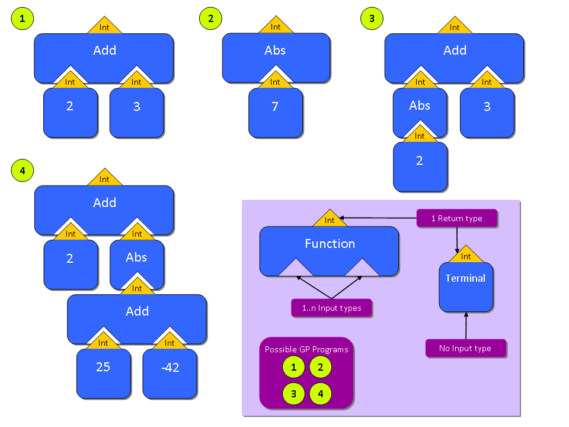

[Documentation Index]
Genetic Programming (GP) is supposed to be introduced by John Koza. GP is sort of different to Genetic Algorithms (GA) as GP is more complex than GA. GP is about evolving programs with a given set of commands and an unknown structure (GA = known structure). Each command is assigned a number of parameters. That way, programs can be constructed. They are represented internally as a tree. But you do not have to cope with the internal representation. For you it is only important to know that you can write sort of programs. Each program contains only those commands and terminals (such as numbers or boolean values) that you define to be used! It is even possible evolving full-blown Java programs (see the Robocode example).
GP was introduced with JGAP 3.0. This document presents some useful information about how to utilize JGAP for GP.
The main philosophy that was setup before extending JGAP towards GP was to reach the goal by adding parts to GA to get GP. Thus: GA + x =GP, with x being the added parts.
A GP Program is represented as a tree with one root node. The root node has child nodes and each child node could potentially have additional child nodes. The following picture denotes this situation:

In the picture you can identify the two functions Add and Abs. Add has two children of type integer and returns a value of type integer. Abs has one child of type integer and returns a value of type integer. Please note that the return type of the root node is equal to the return type of the whole program!
The picture additionally shows different possible arrangements of some functions and terminals.
To get a feeling of how to implement your GP-Program with JGAP, please have a look at the example located in class examples.gp.MathProblem. This example tries to find a formula for a given truth table (X/Y value pairs) and a given set of operators (such as +, -, * etc). The mentioned example class also contains a fitness function named FormulaFitnessFunction. More complex examples can be found in classes examples.gp.Fibonacci and in examples.gp.anttrail.AntTrailProblem.
The math example at a glance (after that the steps are explained in detail) :
1. Create configuration
/**
* Starts the example
* @param args ignored
* @throws Exception
*/
public static void main(String[] args) throws Exception {
GPConfiguration config = new GPConfiguration();
config.setGPFitnessEvaluator(new DeltaGPFitnessEvaluator());
config.setMaxInitDepth(6);
config.setPopulationSize(100);
config.setFitnessFunction(new MathProblem.FormulaFitnessFunction());
... // continued below
2. Create initial Genotype (continued from above method main):
GPGenotype gp = create(config);
}
public static GPGenotype create(GPConfiguration a_conf) throws InvalidConfigurationException {
Class[] types = {
CommandGene.FloatClass};
Class[][] argTypes = {
{}
};
// Define the commands and terminals the GP is allowed to use.
// -----------------------------------------------------------
CommandGene[][] nodeSets = {
{
vx = Variable.create(a_conf, "X", CommandGene.FloatClass),
new AddCommand(a_conf, CommandGene.FloatClass),
new SubtractCommand(a_conf, CommandGene.FloatClass),
new MultiplyCommand(a_conf, CommandGene.FloatClass),
new DivideCommand(a_conf, CommandGene.FloatClass),
new SinCommand(a_conf, CommandGene.FloatClass),
new CosCommand(a_conf, CommandGene.FloatClass),
new ExpCommand(a_conf, CommandGene.FloatClass),
// Use terminal with possible value from 2.0 to 10.0 decimal
new Terminal(conf, CommandGene.FloatClass, 2.0d, 10.0d, false),
}
};
Random random = new Random();
// Randomly initialize function data (X-Y table) for x^4+x^3+x^2+x.
// This is problem-specific and not necessary in other cases.
// ----------------------------------------------------------------
for (int i = 0; i < 20; i++) {
float f = 2.0f * (random.nextFloat() - 0.5f);
x[i] = new Float(f);
y[i] = f * f * f * f + f * f * f + f * f - f;
System.out.println(i + ") " + x[i] + " " + y[i]);
}
// Create genotype with initial population.
// Allow max. 100 nodes within one program.
// ----------------------------------------
return randomInitialGenotype(a_conf, types, argTypes, nodeSets, 100,
true);
}
3. Start the evolution and output the result: (continued in above method main):
// Do 100 evolutions in a row.
// ---------------------------
gp.evolve(100);
// Output best solution found.
// ---------------------------
gp.outputSolution(gp.getAllTimeBest());
} // end of method "main"
4. Optional: Implement your own functions and terminals
Please have a look at packages org.jgap.gp.function, org.jgap.gp.terminal,org.jgap.gp.function and examples.gp.anttrail for available GP functions and terminals. There you can see how to implement your own classes and use them in the above step 2 during setup.
You can benefit from looking at the examples mentioned above. Go for the code and you'll get a better feeling. It's very easy using JGAP for GP!
Now as promised, the steps explained in more detail. If you want to get a quick overview of the JGAP classes involved into GP, please see the end of the document.
The documentation below refers to the example above, corresponding with the step number:
1. Create configuration
At first, a JGAP configuration for GP is created and setup:
GPConfiguration config = new GPConfiguration();
config.setGPFitnessEvaluator(new DeltaGPFitnessEvaluator());
config.setMaxInitDepth(6);
config.setPopulationSize(100);
config.setFitnessFunction(new MathProblem.FormulaFitnessFunction());
The parameters used are:
fitness evaluator: the delta fitness evaluator gives lower fitness values a better ranking as the fitness value is seen as a defect rate. If you want to see the fitness value as a success rate, instead, please use the DefaultGPFitnessEvaluator!
The maximum depth of a GP program on initialization is set to six. Consider a GP program. It is represented as a tree. The maximum number of children of the top node (which has depth zero) is six, resulting in a maximum depth of six. Too high values may result in bad performance of even a memory overflow. Six is a good value for our example. In more complex examples, maybe use a maximum of, say, 12.
The population size, i.e. the number of coexisting GP programs, is set to 100. This already is a quite high value as each program consumes time and memory resources! If programs are getting bigger (i.e. having more children), time and memory consumption rises, too!
Finally, the fitness function is set. It evaluates each GP program, which is also called an individuum. Please notice: The fitness function ALWAYS is specific to your problem, there is no common fitness function! You have to study the examples to get an idea about the implementation of it (later on, there will be some additional documentation).
The fitness function can be found in the JGAP code base in the example class MathProblem.
2. Create initial Genotype
The Genotype initialization and creation is done in method create, which is called from the main method. At first follows the initialization, divided into chunks, starting with:
Class[] types = {
CommandGene.FloatClass};
Class[][] argTypes = {
{}
};
As you can see there are two array, both having one dimension and the same length, namely one. This is a must!
The first array, types, defines the return type of the sub programs. In our example, we only have one sub program, thus the length of the arrays is one. The parameter CommandGene.FloatClass expresses that the return type is Float.Class. This is because CommandGene.FloatClass is just a convenient, speaking definition of Float.Class (it is equivalent).
The second array, argTypes, defines the input type of so-called Automatically Defined Functions (ADF's). They are not important here. If you want to get insights about ADF's, please look at the MathProblem class.
The following box shows the definition of the valid sets of commands (functions and terminals). This means: a GP program will be evolved randomly, but by using one or more of the commands defined in nodeSets, each command can be used more than once, potentially. Please notice, that the variable "X" is set in the fitness function to inject an input value! Also notice, that the last parameter of the variable denotes the return type of the variable, i.e Float.class (or: CommandGene.FloatClass). This is comparable to the declaration in array types, above in this step.
// Define the commands and terminals the GP is allowed to use.
// -----------------------------------------------------------
CommandGene[][] nodeSets = {
{
vx = Variable.create(a_conf, "X", CommandGene.FloatClass),
new AddCommand(a_conf, CommandGene.FloatClass),
new SubtractCommand(a_conf, CommandGene.FloatClass),
new MultiplyCommand(a_conf, CommandGene.FloatClass),
new DivideCommand(a_conf, CommandGene.FloatClass),
new SinCommand(a_conf, CommandGene.FloatClass),
new CosCommand(a_conf, CommandGene.FloatClass),
new ExpCommand(a_conf, CommandGene.FloatClass),
// Use terminal with possible value from 2.0 to 10.0 decimal
new Terminal(conf, CommandGene.FloatClass, 2.0d, 10.0d, false),
}
};
Each command used can either be a function or a terminal. A function has at least one input parameter whereas a terminal never has an input parameter. A terminal is a constant, like a number or a boolean value. You can find a lot of prefabricated functions and terminals in packages org.jgap.gp.function and org.jgap.gp.terminal.
Return Type, Child Type, and Type of the Declaring Class (Declaration Type)
It is important to notice that each function or terminal must support at least one return type. E.g., that means for a terminal representing a number, it must at least support either a float, an integer, a double, a short or a byte number. It can support all of them, but must implement at least one. See org.jgap.gp.terminal.Constant for a simple example. In class org.jgap.gp.terminal.Terminal, there is a more complex example, with fixed numbers that can be mutated and thus have to be mapped to be within the specified bounds.
Functions returning a number have to be setup in analogy: They can support multiple return types like int, float and double, but they must support at least one of them. With numbers it is easy to imagine: it is OK to return either a float value, say, 47.11f, or alternatively, the truncated integer value, 47. See class org.jgap.gp.function.Add for an example, look for the execute_XXX functions where the different return types are realized.
Return Type: The type of the value a function or terminal returns. This could be virtually any class. The class itself is not interpreted, only its name. Meaning: functions and terminals with the same return type can be substituted in a GP program, because their outside interface (their return value) declares the same return type.
Functions have a number of input parameters, this is called the arity of the function. Arity two means: two input parameters. The arity is setup during construction of each function via its base class, also see the Add-class for example. To let JGAP know which functions or terminals may server as children for a parent function, the parent function declares the types of its children. The type of a child is called input type. A parent with input type X.class can have any function or terminal as child which in turn has a return type of X.class.
Input Type: The type of the child a function accepts. This could be virtually any class. The class itself is not interpreted, only its name (as with return type). Input type and return type correspond: A parent function with the same input type as another function's or terminal's return type can mate: The latter mentioned function or terminal can be used as child for the parent function.
Declaration Type: The class a GP function or terminal is declared in (i.e., the name of the source file representing the function or terminal) is completely unimportant for matching parent and children! For the matching, only the above-mentioned return type and input type are important.
Overwriting of method getChildType
A function can have input parameters with different types. Consider the IF-Statement (IF <condition> THEN <command>). The first parameter is a boolean value. Besides, number values could be supported, with a number bigger than zero being seen as true and all other numbers representing false. The second parameter is a void type. See class org.jgap.gp.function.IfElse (especially method getChildType) for an example of this extended type handling for children.
As the fitness function should compare the results of the evolved GP program (i.e. a mathematical function!) with a truth table, we initialize this truth table once at the beginning with fixed, but random input numbers. Instead of these random numbers, it would be perfectly OK to use subsequent values from, say, 0 to 20:
Random random = new Random();
// Randomly initialize function data (X-Y table) for x^4+x^3+x^2+x.
// This is problem-specific and not necessary in other cases.
// ----------------------------------------------------------------
for (int i = 0; i < 20; i++) {
float f = 2.0f * (random.nextFloat() - 0.5f);
x[i] = new Float(f);
y[i] = f * f * f * f + f * f * f + f * f - f;
System.out.println(i + ") " + x[i] + " " + y[i]);
}
The code in the following box returns the initialized genotype, using the above-discussed, initialized parameters. The last two parameters are as follows. The number 100 is the maximum number of nodes to reserve space for in memory for each GP program. If you have a program spanning a full binary tree with depth of six, then you would need 127 nodes (2^(n+1) - 1, n = 6). The last parameter, true, controls that the system outputs verbose messages. This does not influence evolution itself, but maybe useful for analyzing and reduces speed a bit.
return randomInitialGenotype(a_conf, types, argTypes, nodeSets, 100, true);
3. Start the evolution
This is easy, see the code in step 3 at the beginning. It is self-explanatory.
4. Implement your own functions and terminals
For a good start, please see the functions and terminals in packages org.jgap.gp.function and org.jgap.gp.terminal.
Take care of:
Arity: number of children of a function. A zero means: you have a terminal with no children (see above).
Input types: In case of arity greater than zero: For each child declare the type of function or terminal you allow (see above)
Return type: Each function or terminal has exactly one return type, representing the type of the value it returns (see above)
overwrite method getChildType if necessary: Consider this if you have a function with more than one children, with at least two children having different return types. See above paragraph.
Besides: Name your class whatever you like. This is not important for matching parents and children (see above). It is best to take an existing function or terminal as a template.
A further, quite complex example about GP is the Mona Lisa painting problem, see class examples.gp.monalisa.GeneticDrawingApp. For your information, it might be useful to know that there is a corresponding GA example, which can be started with class examples.monalisa.GeneticDrawingApp.
| Q | Crossing Over: Are (custom) functions and terminals crossed over automatically or do I have to develop something? |
| A | They are crossed over automatically, because this is a tree operation which replaces one node with another. The replaced node has the same interface (return type) as the replacing node, so there is no problem. See class org.jgap.gp.impl.BranchTypingCross, which is the standard operator for crossing over. |
| Q | Mutation: Are ( custom) functions and terminals crossed over automatically or do I have to develop something? |
| A | In opposite the crossing over, mutation must be programmed and can only happen if a function or terminal implements interface org.jgap.gp.IMutateable, see below. |
| Q | What is the arity of a command? |
| A | Arity is the number of children a function can have. A terminal is a command with arity zero. The add function which sums up 43 input numbers has the arity of 43. |
| Q | What is strict program creation? |
| A | This option can be set via GPConfiguration.setStrictProgramCreation(true).
The meaning of "strict program creation" is the following: A GP program must comply to a specification. The latter is given by the configuration of available functions and terminals (commands). Each command allows 0..n children of specific input types. Each command has a single return type. A command is only valid if there is a possible combination of commands regarding their accepted input types and the return types given by other commands. In strict program creation, there must be both a function and a terminal for each input type specified by the set of given commands. If we are not in strict program creation, then it is sufficient to have at least a function _or_ a terminal that corresponds to a specific input type. Besides, in strict program creation, it is only tried once to randomly create a correct GP program. In the non-strict mode, it is tries several times (which can be configured). |
The number of nodes (i.e. functions and terminals) ina GP program depends on the arity the parent elements have. The topmost parent element is the root node. Consider as an example the following set of commands to use:
Terminal of type Integer, range [1..3] --> As this node is a terminal is has arity zero
Function Add, accepting two children of type Integer and returning an Integer --> Two children means arity of two
Variable X of type Integer --> arity zero
With this set of commands and the requirement that the root node should return an Integer, one of the following GP programs could be evolved (besides many others, depending on the maximum depth you allow and the range of the terminal you specify):
Add(2, 3)
Add(3,1)
Add(Add(1,1),3)
Add(Add(2,3),2),1)
The following programs would not be possible:
X = Add(2, 3)
X = 3;Add(X, 2)
The first example is not possible as the return type of the root node (and thus of the whole GP Program is said to be Integer). The second program is not possible as the root node is variable X here, which does not allow any other command to follow (denoted by the semicolon as delimiter between commands).
To realize the first program (X=Add(2,3)) you have to declare the return type for the GP Program equivalent to the return type you specify when constructing the variable X in your GP configuration.
To get something like the second program (X = 3;Add(X, 2)) you need a construct that allows chaining of commands, sort of a container for commands. Such container is nothing else than the invisible logical container in any Java function that returns a value. Each command in this function, except the return statement, has a return type of, say, void. Meaning: the statement x = 2 does not return something. It may (or ma not, like NOP - No Operation, the semicolon without statement in Java) only change the internal state of the program. Only the return statement in a function returns something. Thus, a container for GP commands allows a specific number of commands with void-type and a single command at the end return something. The number of commands allowed is controlled by the arity of the container. Say, if the container has arity four, then three commands with non-returning character can be included, followed by a single command tha returns something.
The name for such a logical container in JGAP is sub program, see class org.jgap.gp.function.SubProgram. The type of the commands that are expected in the sub program, are specified when constructing it, with the last type given being the return type of the sub program. The sub program does nothing than sequentially executing all contained commands.
Consider the following configuration of GP commands:
SubProgram with child types [Void, Integer] and arity of two
Terminal with range [1..3] and return type Integer
Variable X with return type Void
Function Add with child types [Integer, Integer] and return type [Integer]
Then, the following GP programs may arise (only considered those that are possible now by using SubProgram):
SubProgram[X=3;Add(X,4)]
SubProgram[X=5;Add(4,Add(X,2))]
...
The semicolon used above is the delimiter between the children of the sub program.
To make a function or terminal mutateable, you have to implement interface org.jgap.gp.IMutateable. For an example, see function org.jgap.gp.function.Add.
Cloning
Cloning is fundamental in evolution. A mutated function or terminal at a specific place in the GP program should not influence other functions or terminals of the same class (e.g. org.jgap.gp.function.Add). If cloning is not possible, then we are talking about many references to a single instance of a function or terminal. If cloning is possible, then each mutated instance is independent from the original.
To make a function or terminal cloneable, you should best implement interface org.jgap.util.ICloneable. For an example, see function org.jgap.gp.function.Add.
| Level: Class.Method | Description | Notes |
| 0: GPGenotype.evolve | Overall: Evolve the population by one generation | |
| Step 1: Select two GP programs to be crossed over | See TournamentSelector, FitnessProportionateSelection | |
| Step 2: Cross over two GP programs | See BranchTypingCross | |
| Step 3: Randomly (instead of crossing over) do reproduction of GP programs | Uses selection from step 1 | |
| Step 4: Randomly add new GP programs | See GPPopulation, DefaultProgramCreator | |
| 1: GPPopulation.create | Create a single GP program calling IProgramCreator | See DefaultProgramCreator |
| 2: DefaultProgramCreator.create | Create a single GP program | Implements IProgramCreator |
| 1: Instantiates the GP program | See constructor of GPProgram | |
| 2: Fills the GP program with nodes | See GPProgram.growOrFull | |
| 3: GPProgram.growOrFull | Initializes a GP program with nodes | |
| 1: Construct as many nodes (=chromosomes) as needed | See ProgramChromosome | |
| 1a: Instantiate a single ProgramChromosome | ||
| 2: For all nodes | ||
| 2a: Grow the node by populating it with sub nodes | See next section | |
| 3: If cache enabled and program found in cache: read fitness; otherwise: calculate fitness of program | ||
| 4: ProgramChromosome.growOrFull | Initializes a node within a program | |
| 1: If custom initialization strategy is registered, use it to preset the first node | See IGPInitStrategy | |
| 2: Recursively build the node and its subtrees | See next section | |
| 3: Recalculate the depths of the nodes in the tree | ||
| 5: ProgramChromosome.growOrFullNode | Create a tree of nodes | |
| 1: Select an appropriate node (CommandGene) | See same class, method selectNode | |
| 2: Validate node, if validator registered | See INodeValidator | |
| 3: Randomly mutate node if node supports this | See IMutateable | |
| 4: If node is marked as unique, remove type of node from list of available functions | See IUniqueCommand | |
| 5: Clone node and add it to the tree of nodes | ||
| 6: Call self recursively (goto step 1 in this section) if nodes are missing | End is reached if required depth of node tree is met | |
| 0: Back in evolve | 5: Set evolved population as current | |
| 6: Fire event GPGENOTYPE_EVOLVED_EVENT | See GeneticEvent |
Please note that the line numbers are only to give an idea, they could change with JGAP versions published after this documentation.
| GPGenotype.randomInitialGenotype, line 218 | |||||||||||
| GPGenotype.randomInitialGenotype, line 259 | |||||||||||
| GPGenotype.randomInitialGenotype, line 310 | |||||||||||
| GPGenotype.randomInitialGenotype, line 355 | |||||||||||
| IPopulationCreator.initialize | |||||||||||
|
|||||||||||
| GPPolulation.create(...), line 235 | |||||||||||
|
|||||||||||
| GPPolulation.create(...), line 271 and GPPolulation.create(...), line 405 | |||||||||||
|
|||||||||||
| GPPolulation.create(...), line 478 | |||||||||||
| IProgramCreator.create(...) | |||||||||||
|
|||||||||||
| GPProgram.growOrFull, line 160 | |||||||||||
| ProgramChromosome.growOrFull, line 235 | |||||||||||
| ProgramChromosome.growOrFullNode, line 519 | |||||||||||
|
|||||||||||
About Genetic Programming by John Koza
The Mona Lisa Problem for Genetic Programming (in German)
Copyright © 2006-2009 Klaus Meffert. All rights reserved.
[Documentation Index]